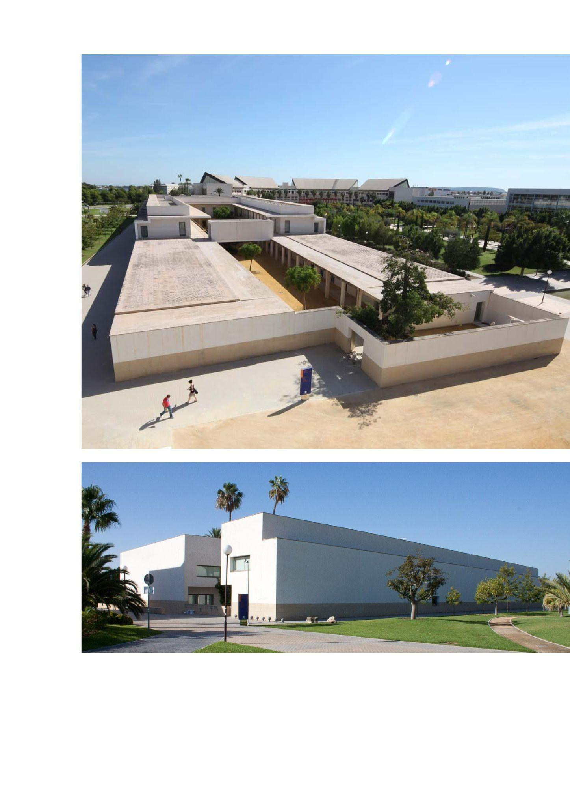
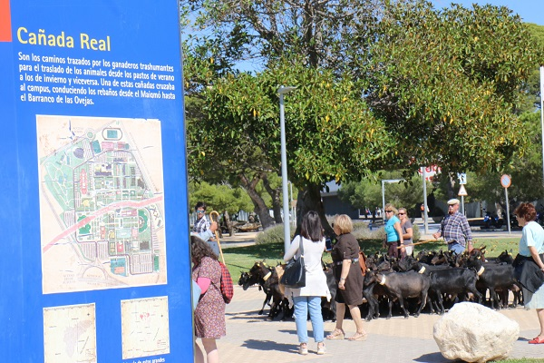
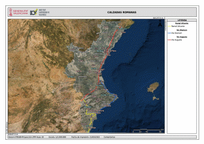
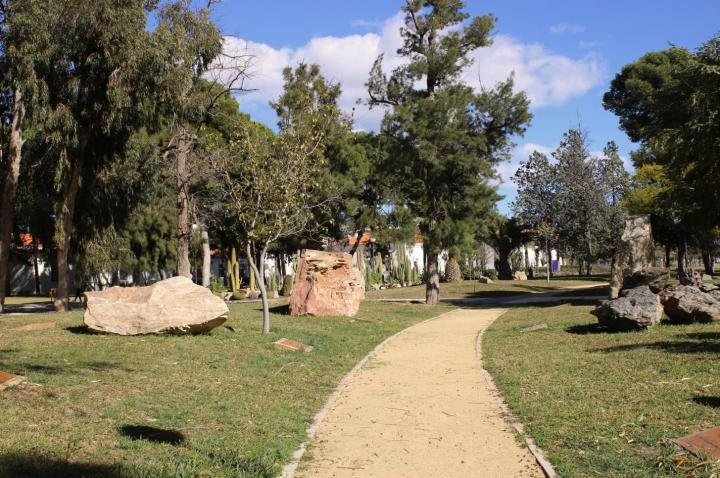
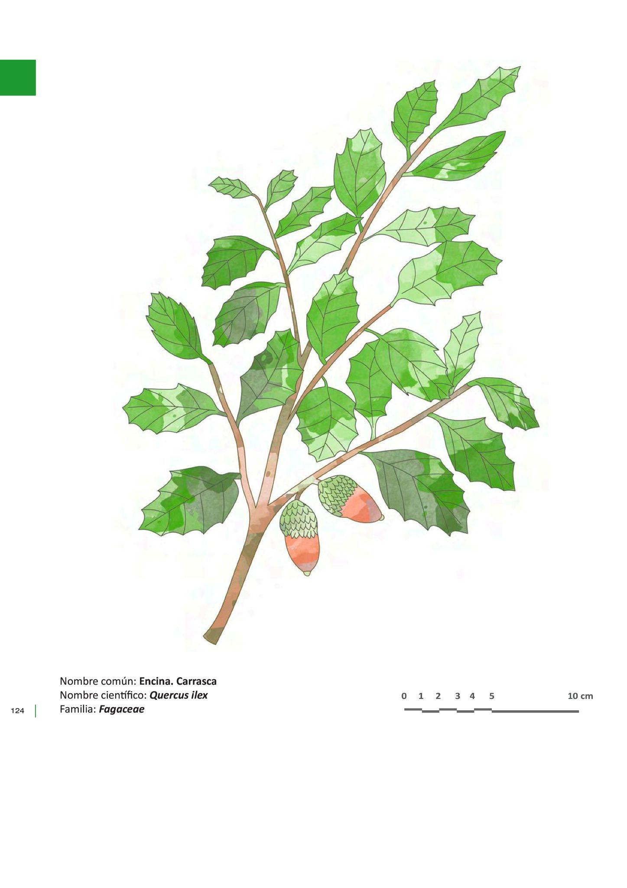

PARADA 8: SENDERO DE LAS ROCAS
Continuamos el recorrido desde el edificio de Rectorado y Servicios Generales en dirección hacia nuestra primera parada, Facultad de Filosofía y Letras.
El edificio de Rectorado forma parte de las edificaciones realizadas entre 1990 y 2000, como hemos mencionado en la parada anterior. Podemos acceder al patio interior por la puerta falsa.

Curiosidad. Cañada Real. Una de las vías ganaderas de trashumancia pasa por la UA. Podemos ver la cartografía de detalle y la información en un panel en nuestro camino hacia el punto de inicio de la ruta geográfica, que fue colocado en 2007. Son varios los años que en el mes de octubre se realizan Jornadas reivindicando este uso y el reconocimiento de la vida rural. La Geografía rural es otra de las ramas de esta disciplina.

El visor de la GVA te ofrece información sobre esas vías pecuarias o pasos tradicionales de ganado, así como carreteras históricas, por ejemplo, las calzadas romanas. Todas ellas forman parte del patrimonio cultural y merecen ser protegidas o no estar transformadas u ocupadas por otros usos. Pero, la mayoría de ellas, como sucede en el campus, han sido ocupadas por otros usos del suelo.

Junto al panel informativo de la Cañada Real, tenemos el Jardín de las Rocas. Como comentamos en otras paradas, la Geomorfología es una de las ramas de la Geografía. Conocer las características de las rocas, cómo se han formado y cómo responden a las fuerzas tectónicas y a las fuerzas erosivas, es el objeto de la Geomorfología. En este sendero con rocas de diversos puntos de España podemos dar por finalizado nuestro recorrido.
Te invitamos a que leas los carteles que acompañan a cada una de ellas y que observes cómo la primera de ellas, procedente de la Serra de Santa Pola, contiene un microhábitat de biodiversidad vegetal. Algunas de estas especies son rupícolas o rupestres, como el ombligo de Venus (Umbilicus rupestris) http://herbarivirtual.uib.es/es/comunitat-valenciana/1073/especie/umbilicus-rupestris-salisb-dandy

https://web.ua.es/es/ecocampus/imagenes/biodiversidad/flora/senda-paisajistica/21-jardin-rocas.jpg
Curiosidad: de regreso a la parada 1, junto al edificio de Filosofía y Letras III podrás ver un árbol. Es una carrasca o Quercus ilex ssp rotundifolia /Quercus ilex ssp ballota. Compara la hoja y el fruto, si tiene, con el quejigo que observamos en la Plaza de Europa. La carrasca es el árbol emblemático de nuestras montañas alicantinas, junto a otras especies caducifolias. Todas ellas constituyen el denominado bosque mixto mediterráneo. Planta muy resistente y de gran utilidad en el pasado, aprovechándose desde su bellota como alimento del ganado y del ser humano, hasta su madera para obtener carbón vegetal. https://www.arbolesibericos.es/genre/quercus/species/quercusilex

Más información en:
{kind=link}